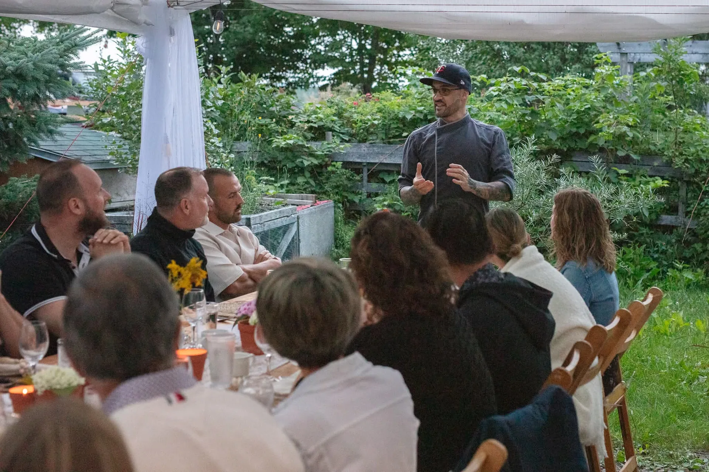
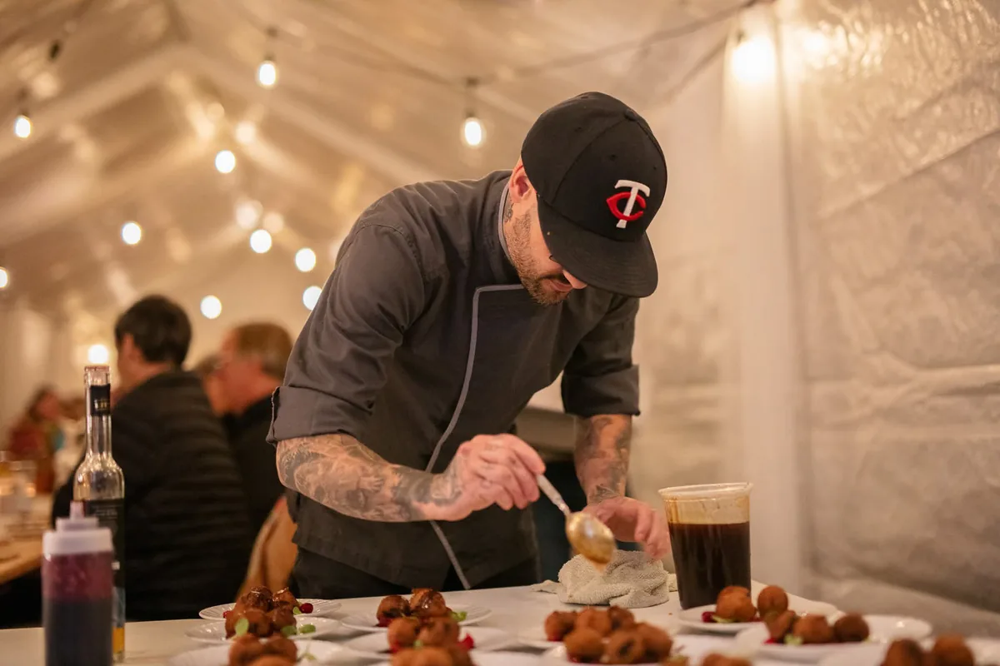
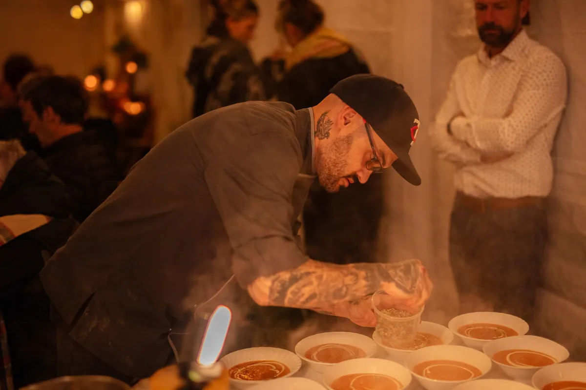
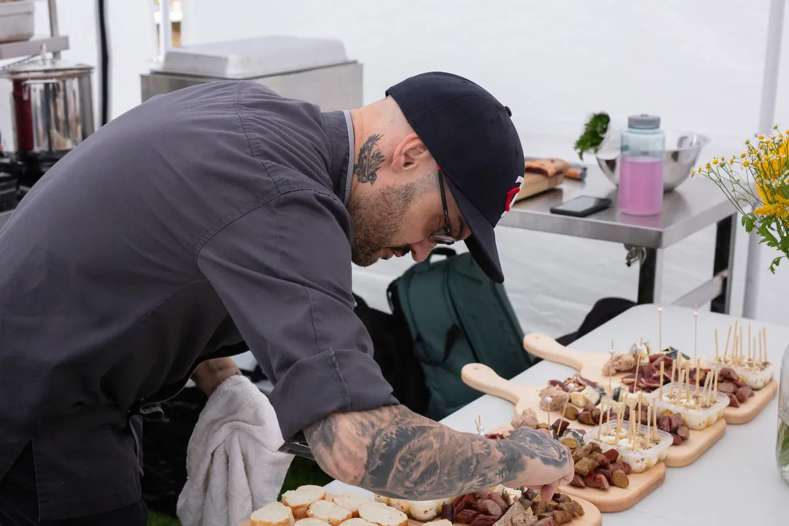
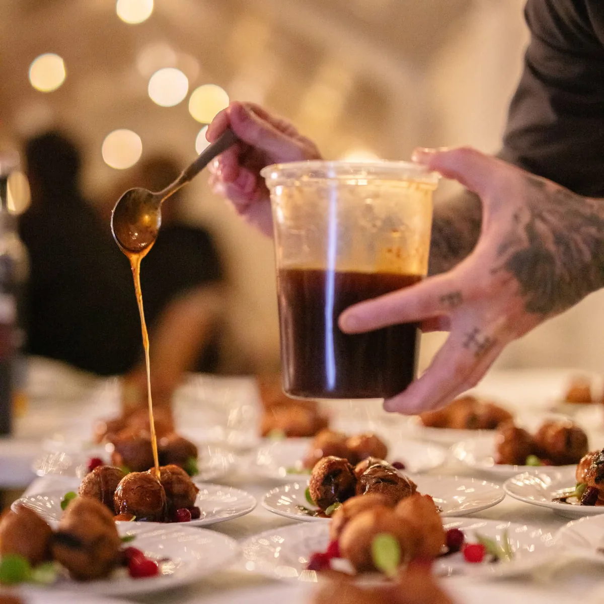

Le chef
Trois ans à raconter
le territoire dans une assiette.

Chef Phil Philippe Blais
Être chef privé, pour moi, ce n'est pas seulement cuisiner. C'est raconter le territoire dans une assiette. C'est faire goûter la forêt, la terre, le vent du Nord.
Merci à celles et ceux qui m'ouvrent leur porte depuis le début de cette aventure. Trois ans déjà. Et ce n'est que le commencement.
— Chef Phil
Le parcours
Chef Phil cumule près de 15 ans d’expérience en cuisine. Formé au CFP de l’Envolée, à Montmagny, il a forgé son savoir-faire dans différents milieux, notamment au Bonne Entente, à Québec, et au Gîte du Mont-Albert, en Gaspésie.
Douze ans après y avoir été formé, il revient au CFP l’Envolée comme enseignant en cuisine, où il transmet à son tour les connaissances, la rigueur et le respect du travail bien fait qui ont marqué son propre parcours.
En action
Le chef au travail lors d’un événement : chaque assiette est dressée sur place.

Le service du velouté.

Le montage des planches à partager.

Le caramel aux chanterelles, à la cuillère.
Le territoire d'abord, sans gluten toujours
La signature de Boréale, c'est la découverte du territoire : chaga, argousier, ail des bois, plantes de la forêt et produits des producteurs d'ici. Le sans gluten, c'est d'abord l'alimentation du chef lui-même : aucun ingrédient contenant du gluten n'entre dans sa cuisine, et tous ses menus sont pensés ainsi dès le départ, jamais adaptés après coup.
Envie de recevoir le chef à votre table ?
Écrivez-lui pour discuter de votre événement.
Réserver une soirée →